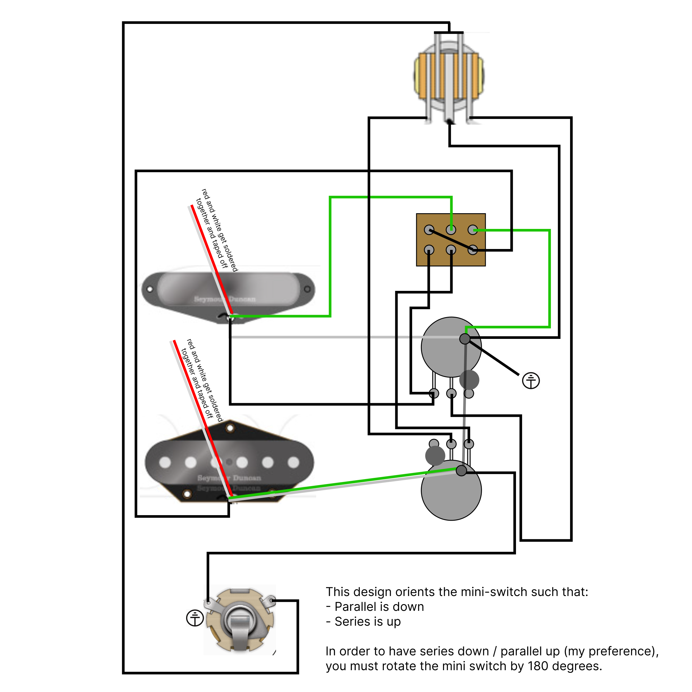
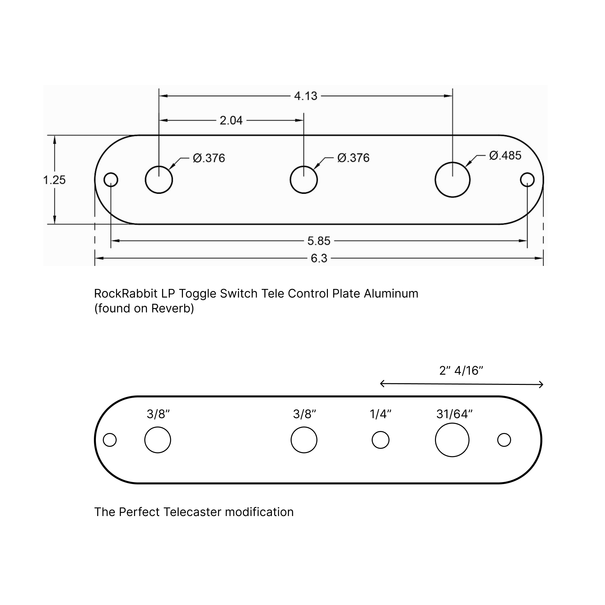

Euchomai
This is the blog of Aaron Smith. You can contact me on my
home page.
The Perfect Telecaster
August 20, 2024
Jimmy Page has been my favorite guitarist ever since I first saw It Might Get
Loud. Since then I've listened to hundreds or thousands of hours of Led Zeppelin
albums and they still never get old.
Page doesn't just make playing guitar look easy - he makes it look downright sloppy.
Here's my favorite clip from the movie:
He's not just playing guitar, he's playing time itself!
When I first saw this clip in high school, I was playing an Epiphone Les Paul; the same
design, albeit considerably cheaper, that Page plays in the clip. I upgraded to an
American Telecaster a few years later and have played the same guitar ever since.
The Telecaster is almost the perfect guitar. Page, most closely associated with his
"Number 1" Les Paul today, actually played a Telecaster on the first Led Zeppelin album.
(Led Zeppelin was recorded in about 30 hours of studio time - start to finish, including
mixing - over the course of only 3 weeks. What a band.)
My philosophy when playing guitar is to never achieve with a pedal what I can do with
nature. In the video, Page overdrives his amp not with a pedal, but by switching from
his neck pickup (set to a lower volume) to his bridge pickup (set to a higher volume).
What results is the basic physical reality of his guitar's voltage swinging too high for
the amp and getting clipped... overdrive.
You can't play Ramble On the way Page does in this clip with a standard
Telecaster. A Telecaster has a three way switch, a volume knob, and a tone knob. While
you can switch between the neck and bridge, you can't set them to two different volumes.
There's only one volume knob controlling both pickups. Fender addresses this with their
dual volume Telecaster Deluxe, but in the process sacrifices the most important thing of
all - the iconic Telecaster look.
After years of being bothered by this and seeing no reason (or room in our Brooklyn
apartment) to buy a Les Paul Standard, I ordered a soldering iron and resolved to crack
open my beloved guitar.
After careful consideration, I decided on the following modifications:
1. Two volume knobs, so you can quickly and naturally overdrive the guitar.
2. A Les Paul three way switch because it is in every way superior to the Telecaster's.
3. No tone knob, cause who uses it anyways?
4. A two way series/parallel switch.
The first two points are obvious given what I described above. The latter two were forced
on me by space constraints, but necessity being the mother of invention, I dare say I've
perfected the Telecaster.
The last dial on a standard Telecaster, the tone knob, is pretty useless. I'd argue the
only time it is used is to show off, which really just makes my point. Replacing
it with a second volume knob is a common modification.
But the tone knob, however flawed, does represent an ideal: it's nice to have options!
Even if those options are (if we're being honest) "spin it to one end" and "spin it to
the other end".
Since most players' tone knob experience is practically binary, I decided to both
approximate and improve on that real world reality with a two way series/parallel
switch. I'll skip what that means in detail, but imagine it as a switch between "more
signal" and "a little less signal".
When I set out to make this change, I figured someone must have already done this. And
perhaps they have... but not on the internet. I could not find a single wiring diagram
online. With no soldering experience and having never modified a guitar before in my
life, I drew my own diagram and learned how to solder.
The result is the perfect Telecaster. In parallel, the guitar plays and sounds like you
just got it from the factory. It still looks like a Telecaster, yet the switch offers a
Les Paul's dynamic flexibility. And in series, there's even more drive. Sweet
perfection.


No little disturbance in Ephesus
July 20, 2024
One of my favorite stops on our trip was Ephesus. Located in western Turkey, straight
across the Aegean Sea from Greece and to the south of ancient Troy, Ephesus was a major
port city and one of the richest in Asia. It was also firmly in the grip of the Roman
Empire.
In 55 AD, there was a disturbance in Ephesus that was recorded for us, quite vividly, in
history. The roots of this disturbance began in 53 AD when a Jewish man, born further
east in southern Turkey, arrived in the bustling port city.
While Apollos was in Corinth, Paul passed through the interior regions and came to
Ephesus, where he found some disciples.
Acts 19:1
Acts 19:1
You can imagine him walking down this street, lined on both sides with small shops, that
leads directly to the port where people and goods from Greece, Egypt, and Rome arrived
daily.

Paul spends the next few years in Ephesus, debating first in the local synagogue, and
then in a local lecture hall.
He entered the synagogue and for three months spoke out boldly, and argued persuasively
about the kingdom of God. When some stubbornly refused to believe and spoke evil of the
Way before the congregation, he left them, taking the disciples with him, and argued
daily in the lecture hall of Tyrannus.
This continued for two years, so that all the residents of Asia, both Jews and Greeks, heard the word of the Lord.
Acts 19:8-10
This continued for two years, so that all the residents of Asia, both Jews and Greeks, heard the word of the Lord.
Acts 19:8-10
Both the lecture hall of Tyrannus and the synagogue are lost to us today, but there is
some indication that the lecture hall was replaced by the Library of Celsus (pictured
left below, and also at the tail end of the street in the first picture) when it was
built in the 110s AD. We found a Menorah (pictured right) carved into the stone steps of
the Library of Celsus, a reminder of just how diverse, yet recognizable, this
magnificent city was two thousand years ago.
After a few years in Ephesus, Paul decides to hit the road again and keep making his way
toward Rome:
Now after these things had been accomplished, Paul resolved in the Spirit to go through
Macedonia and Achaia, and then to go on to Jerusalem. He said, “After I have gone there,
I must also see Rome.” So he sent two of his helpers, Timothy and Erastus, to Macedonia,
while he himself stayed for some time longer in Asia.
Acts 19:21-22
Despite Roman era Jews and early Christians (who, like Paul, were mostly Jewish at the
time) featuring in the story so far, Ephesus was not a Christian town. Far from it. In
fact, the Temple of Artemis, one of the Seven Wonders of the Ancient World, had been
funded by the Ephesians themselves after an arsenist burned down an earlier version in
356 BC.
I have set eyes on the wall of lofty Babylon on which is a road for chariots, and the
statue of Zeus by the Alpheus, and the hanging gardens, and the colossus of the Sun, and
the huge labour of the high pyramids, and the vast tomb of Mausolus; but when I saw the
house of Artemis that mounted to the clouds, those other marvels lost their brilliancy,
and I said, "Lo, apart from Olympus, the Sun never looked on aught so grand".
Antipater, Greek Anthology IX.58
The Temple was a huge deal. The site of worship for people going back centuries, it was
also an economic engine for the city. Priests, prostitutes, artisans, and farmers would
all do regular business at and be closely interlinked with the temple's success.
Out of the wide variety of citizens in Ephesus, there was one group that refused to
enter into in the temple's orbit. Jews, believing that their God was the one true God,
and the only one deserving worship, were the exception to the rule. But given that they
were a minority, with a religion so ancient as to deserve some level of mystical
respect, the locals gave them a pass.
So it must have been a shock when, in just a few years, a small community of Ephesians,
not clearly defined by one race or religion (indeed, they would later be deemed
"athiests" by the Roman authorities), stopped engaging with the temple. Our story picks
back up around 55 AD:
About that time no little disturbance broke out concerning the Way. A man named
Demetrius, a silversmith who made silver shrines of Artemis, brought no little business
to the artisans. These he gathered together, with the workers of the same trade, and
said, “Men, you know that we get our wealth from this business. You also see and hear
that not only in Ephesus but in almost the whole of Asia this Paul has persuaded and
drawn away a considerable number of people by saying that gods made with hands are not
gods. And there is danger not only that this trade of ours may come into disrepute but
also that the temple of the great goddess Artemis will be scorned, and she will be
deprived of her majesty that brought all Asia and the world to worship her.”
When they heard this, they were enraged and shouted, “Great is Artemis of the
Ephesians!” The city was filled with the confusion; and people rushed together to the
theater, dragging with them Gaius and Aristarchus, Macedonians who were Paul's travel
companions.
Acts 19:23-29
The Ephesian theater, only a short walk past the Library of Celsus, is pictured left
below. It's easy to imagine the crowd, spurred on by wealthy artisans fearing their
livelihoods, rushing in from the bustling city outside to bring these two troublemakers
to justice.
On the right is a statue of Artemis from the Ephesus museum. The temple itself would
have contained a similar one carved from wood, painted, and adorned with jewelry. This
model and numerous other variations - big and small, for official and personal use -
were crafted with great skill by artisans like Demetrius and his colleagues.

The story continues with a chaotic scene in the amphitheater:
Meanwhile, some were shouting one thing, some another; for the assembly was in
confusion, and most of them did not know why they had come together. Some of the crowd
gave instructions to Alexander, whom the Jews had pushed forward. And Alexander motioned
for silence and tried to make a defense before the people. But when they recognized that
he was a Jew, for about two hours all of them shouted in unison, “Great is Artemis of
the Ephesians!” But when the town clerk had quieted the crowd, he said, “Citizens of
Ephesus, who is there that does not know that the city of the Ephesians is the temple
keeper of the great Artemis and of the statue that fell from heaven? Since these things
cannot be denied, you ought to be quiet and do nothing rash. You have brought these men
here who are neither temple robbers nor blasphemers of our goddess. If therefore
Demetrius and the artisans with him have a complaint against anyone, the courts are
open, and there are proconsuls; let them bring charges there against one another. If
there is anything further you want to know, it must be settled in the regular assembly.
For we are in danger of being charged with rioting today, since there is no cause that
we can give to justify this commotion.” When he had said this, he dismissed the
assembly.
Acts 19:32-41
And that's where the disturbance in Ephesus ends. The crowd, calmed both by the town
clerk and the even greater threat of retributive violence from the Roman authorities,
disperses and goes back to their business.
But that's not the end for the Christians in Ephesus. Carved into stones all over the
city is the ancient ἸΧΘΥΣ symbol. A combination of Greek letters, it stands for Iesous
(Jesus), Khristos (Anointed), Theou (God), Uios (Son), and Soter (Savior). The letters,
when merged into a circle, could be discreetly used by Christians, no doubt wary of
being dragged back into the theater, to identify each other and their meeting places.
Here is one such carving in a stone right in front of the amphitheater:
Troy, circa 2024
June 28, 2024
The ancient city of Troy, immortalized in Homer's Iliad, is located in northwestern
Turkey, along the Aegean to the south of Istanbul. Leading up to our visit in April, I
read Emily Wilson's new translation of the epic poem. Wilson chose to render Homer's
dactylic hexameter, which is a rhythm compatible with the original Greek, into iambic
pentameter, which is better suited to English and used by most of our own great poets.
It is a vivid experience. Here is just one example:
He threw his spear at Pandarus.
Athena steered it beneath his eye and through his nose,
smashing his white teeth. Then the tireless bronze
cut off his tongue, right at the root—the tip
emerged again beneath his chin. He fell
out of the chariot. His dazzling armor
and shining weapons clattered all around him.
His swift-hoofed horses swerved and galloped off.
His life and spirit were released and lost.
The Iliad: V 290 (Emily Wilson)
Athena steered it beneath his eye and through his nose,
smashing his white teeth. Then the tireless bronze
cut off his tongue, right at the root—the tip
emerged again beneath his chin. He fell
out of the chariot. His dazzling armor
and shining weapons clattered all around him.
His swift-hoofed horses swerved and galloped off.
His life and spirit were released and lost.
The Iliad: V 290 (Emily Wilson)
More than a movie, the Iliad was dozens of hours of premium television, sung by a bard
who knew it by heart. Other passages cut deep in a different way:
No man can get away
from destiny, first set for us at birth,
however cowardly or brave he is.
The Iliad: VI 487-489 (Emily Wilson)
from destiny, first set for us at birth,
however cowardly or brave he is.
The Iliad: VI 487-489 (Emily Wilson)
Standing on what remains of the citadel of ancient Troy and looking out over the plain,
beyond which the "swift Greek ships" would have been docked, was one of the highlights
of my life.
I could hear Hector's wife, Andromache, pleading with him to remain with her and their
young son behind the "sturdy walls of Troy" instead of going out to face Agamemnon's
coalition; and old king Priam, watching as Hector, his beloved son, was later chased down
and mercilessly killed by Achilles; and Hecuba, Hector's mother, wailing on the
citadel's walls as her son's body is dragged through the dirt back to the Greek camp.
It's a brutal work, and a reminder of the devastating cost of war. In Achilles' own
words:
If only conflict were eliminated
from gods and human beings! I wish anger
did not exist. Even the wisest people
are roused to rage, which trickles into you
sweeter than honey, and inside your body
it swells like smoke—just so, Lord Agamemnon
enraged me. But that happened in the past.
So let it go, though I am still upset.
I must control the feelings in my chest,
and go to look for Hector, who destroyed
the one I loved the most, my head, my life.
Thereafter, I will welcome death, whenever
Zeus and the other deathless gods may wish
to bring it.
The Iliad: XVIII 105-118 (Emily Wilson)
from gods and human beings! I wish anger
did not exist. Even the wisest people
are roused to rage, which trickles into you
sweeter than honey, and inside your body
it swells like smoke—just so, Lord Agamemnon
enraged me. But that happened in the past.
So let it go, though I am still upset.
I must control the feelings in my chest,
and go to look for Hector, who destroyed
the one I loved the most, my head, my life.
Thereafter, I will welcome death, whenever
Zeus and the other deathless gods may wish
to bring it.
The Iliad: XVIII 105-118 (Emily Wilson)
All this, on the plains of Troy.
Olympic Torch Relay in Montpellier
June 4, 2024
We were lucky to catch the Olympic torch relay in Montpellier while staying there last
month. The energy in France is electric. It will be the first summer Olympics here in
exactly 100 years.
This is French decathlete Kevin Mayer (left) doing a warm up run before his leg of the
relay:
And another relay member actually carrying the Olympic torch:
Built by hand for eternity
May 22, 2024
I coded up the last two versions (this and the last one) of this site by hand. Raw html,
css, and a few lines of javascript. Other than fonts, the only part I didn't write was
a syntax highlighting library that I begrudgingly (yet without hesitation) included from
Prism.js.
Practically speaking, writing the site by hand is worth it for me. In a business
building a living, breathing piece of software, libraries and frameworks are great. For
a personal site that I update once a decade, I'd rather not enter dependency hell every
time I touch the code.
My other motive is more philosophy than engineering. Pure html, css, and javascript will
probably be runnable in 1000 years. Today's fashionable WYSIWYG site or blog generator,
maybe not. I like the idea that my blog, which is not very special today, could somehow
become a historical artifact in the future. Vain? Sure... But crazier things have
happened!
I was planning to commend this approach to others after finishing my redesign. At least,
until I spent half a day reformatting the old markdown posts into html. What a waste of
time!
Civilization was like a mad dash that lasted five thousand years. Progress begot more
progress; countless miracles gave birth to more miracles; humankind seemed to possess
the power of gods; but in the end, the real power was wielded by time. Leaving behind a
mark was tougher than creating a world. At the end of civilization, all they could do
was the same thing they had done in the distant past, when humanity was but a babe:
Carving words into stone.
Death's End (Liu Cixin)
Death's End (Liu Cixin)
Euchomai in 2024
May 15, 2024
I am currently reading English historian Tom Holland's recent book, "Dominion: How the
Christian Revolution Remade the World". I found particularly interesting this quote on page
32:
This spirit, this ferocious commitment to being the best, was one in which all aspired
to share. In Homer's poetry, the word for 'pray', euchomai, was also a word for
'boast'.
This passage resonated strongly with me having just finished the Iliad last month and
subsequently visited the site of ancient Troy. Praying and boasting are, for Achilles
and his friends, much more closely related than we see them today.
Euchomai was also used, with a very different meaning, a millenium later by Paul in what
has become the most influential set of letters ever written. In 50 AD, Paul planted a
church in Corinth that he would write to several times over the next few years. It was
facing some pretty significant issues: adultery (1 Cor 5:1), lawsuits (1 Cor 6:1), and
prostitution (1 Cor 6:15) to name a few. In 55 AD, he writes in his final extant letter
to the Corinthian community:
Examine yourselves to see whether you are living in the faith. Test yourselves. Do you
not realize that Jesus Christ is in you?—unless, indeed, you fail to meet the test! I
hope you will find out that we have not failed. But we pray [euchometha] to God that you
may not do anything wrong—not that we may appear to have met the test, but that you may
do what is right, though we may seem to have failed. For we cannot do anything against
the truth, but only for the truth. For we rejoice when we are weak and you are strong.
This is what we pray [euchometha] for, that you may become perfect.
2 Corinthians 13:5-9
2 Corinthians 13:5-9
Paul cares deeply for this community and wants the best for them. The last two lines are
a stark contrast with Homer. Paul rejoices in his weakness if it means that his friends
are strong, and in his weakness he is praying. The two statements can be read in
parallel: weak/pray -> strong/perfect.
Paul's euchomai is my inspiration for this blog. You won't find any greatness here: most
of my projects are half finished and my writing seems dated to me the very next time I
read it. What I can offer is honesty and some of my small contributions to this world.
Thank you for reading.
Website Redesign
May 15, 2024
Yesterday I
pushed
a fresh coat of paint for my website and brought back my blog! Anything before this
post is veeeery old... or rather from when I was very young... you've been warned!
Week 3 - Introduction to Monads in JavaScript
September 8, 2015
Topics
Maybemonad- Monad laws
- Left identity
- Right identity
- Associativity
- Resources
Introduction
This post is the third in a 12 week series of sessions that I wrote for and teach at
VandyApps, the programming club at Vanderbilt University. The sessions explore
functional programming topics in JavaScript and Haskell. If you like continuity and want
to start from the beginning, the first post can be found
here.
This week, we will use JavaScript to explore the `Maybe` monad. We will first present a
common problem that requires extraneous amounts of boilerplate code: null checking. We
will then learn the properties of a monad and see how creating a maybe monad can isolate
the boilerplate code required for null checks.
Maybe Monad
Imagine that we work at a fictional web company. Our company has decided to consume
Elgoog's Maps API. We will provide the API with a city and it will return to us the
coordinates of that city's capitol. Elgoog returns a JSON object as their response. Here
is a successful response to a query:
var response = {
'location': {
'country': 'USA',
'city': {
'name': 'Boston'
'coordinates': {
'latitude': 1234,
'longitude': 2345
}
}
}
}
Sometimes, Elgoog doesn't give us all the information we need. For instance, they may
not have the coordinates for our city, or the city we searched for may not exist at all.
Here are two examples of responses that indicate failure.
var badResponse = {
'location': {
'country': 'USA',
'city': {
'name': 'Boston',
'coordinates': null
}
}
}var badResponse = {
'location': null
}
Now that we know what form responses can take, let's write code to retrieve these
coordinates from the response. We want to return an array containing the latitude and
longitude pair.
function getCoordinates(response) {
var latitude = response.location.city.coordinates.latitude;
var longitude = response.location.city.coordinates.longitude;
return [latitude, longitude];
}
What happens when we call this code with the successful response?
var coords = getCoordinates(response); // => [1234, 2345]
We're done! Not quite; we still haven't tested the failed lookup response. Let's try
that.
var coords = getCoordinates(badResponse);
// => Uncaught TypeError: Cannot read property 'latitude' of null
Looks like that won't work. JavaScript gave us a TypeError (Java would throw a
NullPointerException). Do you see why the error is occurring? We are trying to access
the `latitude` property of `null`. Of course, `null` doesn't have a `latitude` property,
so JavaScript complains.
To solve this problem, we need to perform checks in our code to test for `null` values
before we access their properties. For better or worse, we can put all of these null
checks into a single `if`-statement by using short-circuit evaluation.
function getCoordinates(response) {
var latitude,
longitude;
if (response !== null && response.location !== null
&& response.location.city !== null
&& response.location.city.coordinates != null) {
latitude = response.location.city.coordinates.latitude;
longitude = response.location.city.coordinates.longitude;
if (latitude === null || longitude === null) {
throw "Error: Coordinates cannot be null";
}
} else {
throw "Error: Response object did not contain coordinates.";
}
return [latitude, longitude];
}
Phew, that was a lot of null checks. Unfortunately, they are necessary if we are to be
100% sure that a TypeError exception won't be thrown unexpectedly.
But... maybe we can be smarter about how we perform null checks.
Introducing the Maybe Monad
In Haskell, the `Maybe` type is defined as follows:
data Maybe t = Just t | Nothing
That declaration says that
Maybe consists of Just something (t), or Nothing at
all.
Let's write our
Maybe function in JavaScript and
see how it can help us solve the null check problem. Then we'll return to it and see how
the magic works.
Maybe = function(value) {
var Nothing = {};
var Just = function(value) {
return function() {
return value;
};
};
if (typeof value === 'undefined' || value === null)
return Nothing;
return Just(value);
};
Let's try passing a few values to
Maybe.
Maybe(null) == Nothing; // => true
typeof Maybe(null); // => 'object'
Maybe('foo') == Nothing; // => false
Maybe('foo')(); // => 'foo'
typeof Maybe('foo'); // => 'function'
Now we can rewrite our function using
Maybe.
function getCoordinates(response) {
if (Maybe(response) !== Nothing
&& Maybe(response.location) !== Nothing &&
Maybe(response.location.city) !== Nothing
&& Maybe(response.location.city.coordinates) != Nothing) {
var latitude = Maybe(response.location.city.coordinates.latitude);
var longitude = Maybe(response.location.city.coordinates.longitude);
if (latitude === Nothing || longitude === Nothing) {
return "Error: Coordinates cannot be null";
}
return [latitude, longitude];
} else {
return "Error: Response object did not contain coordinates.";
}
}
Well, that actually didn't help us very much. In fact, we had to increase the amount
of code we wrote to use the
Maybe monad. That
sucks.
As it turns out, our current Maybe function isn't
actually a monad. Why? Because it doesn't conform to the monad laws.
Monad Laws
There are three 'laws' that must be followed in order to create a monad. These laws are
like the math version of an interface. If our monads conform to these laws, then
functions that act on the monad "interface" can be used on our monads. If we add a few
more laws (which will be covered later on in our series) our monads can be used
(stacked) with other monads.
Here are the laws in JavaScript. We will use
Maybe
for concreteness in these laws, noting that in a formal definition of the laws, more
general notation is used.
Law 1: Left identity
Maybe(x).bind(fn) == Maybe(fn(x)); // for all x, fn
Law 2: Right identity
Maybe(x).bind(function(x){return x;}) == Maybe(x); // for all x
Law 3: Associativity
Maybe(x).bind(fn).bind(gn) == Maybe(x).bind(function(x) {
return gn(fn(x));
}); // for all x, fn, gn
Bind
By now, maybe you've noticed that those laws use a 'bind' function that we haven't
written yet. As it turns out, the bind function is the last piece in the monadic puzzle.
Let's write one.
As described in the monad laws, bind needs to perform an action on the value contained
in our
Maybe, then wrap the return value back up
in another Maybe.
Let's take a look at the Haskell type signature for bind.
Maybe a -> (a -> Maybe b) -> Maybe b
-- ^param 1 ^----------^param 2 ^return value
This signature tells us that the bind function takes a
Maybe (param 1) and a function that transforms a value
(param 2) and returns a Maybe that contains the
transformed value. A common analogy for this process is opening a box (Maybe a) that contains a value (a), then transforming that value into another value
(a into b),
and wrapping the new value back up into the box (Maybe
b).
Note: Because of JavaScript's weak type system, the type signature of our bind function is actually Maybe a -> (a -> b) -> Maybe b.
Let's add the bind function to our Maybe monad.
Maybe = function(value) {
var Nothing = {
bind: function(fn) { return this; }
};
var Just = function(value) {
return {
bind: function(fn) { return Maybe(fn.call(this, value)); }
};
};
if (typeof value === 'undefined' || value === null)
return Nothing;
return Just(value);
};
Now we can rewrite our Elgoog client so that it uses the bind function.
function getCoordinates(response) {
var coordinates = Maybe(response).bind(function(r) {
return r.location;
}).bind(function(r) {
return r.city;
}).bind(function(r) {
return r.coordinates;
});
var lat = coordinates.bind(function(r) {return r.latitude});
var lon = coordinates.bind(function(r) {return r.longitude});
if (lat === Nothing || lon === Nothing) {
throw "Error: Coordinates cannot be null";
}
return [lat, lon];
}
This code looks a lot cleaner. Our intent is more clear, and the code is relatively
"flat". But by adding a few more functions to our monad, we can improve this code even
more.
Maybe = function(value) {
var Nothing = {
bind: function(fn) {
return this;
},
isNothing: function() {
return true;
},
val: function() {
throw new Error("cannot call val() nothing");
},
maybe: function(def, fn) {
return def;
}
};
var Just = function(value) {
return {
bind: function(fn) {
return Maybe(fn.call(this, value));
},
isNothing: function() {
return false;
},
val: function() {
return value;
},
maybe: function(def, fn) {
return fn.call(this, value);
}
};
};
if (typeof value === 'undefined' || value === null)
return Nothing;
return Just(value);
};
Phew, that's a lot. Let's take a look at the new functions:
-- Returns true if the Maybe is Nothing and false otherwise.
isNothing :: Maybe a -> Bool-- Returns the value inside of the Maybe monad.
val :: Maybe a -> a-- From the Haskell wiki: "The maybe function takes a default value,
-- a function, and a Maybe value. If the Maybe value is Nothing,
-- the function returns the default value. Otherwise, it applies
-- the function to the value inside the Just and returns the result."
maybe :: b -> (a -> b) -> Maybe a -> b
Let's rewrite our Elgoog client one final time using our helpful new functions.
function getCoordinates(response) {
return Maybe(response).bind(function(r) {
return r.location;
}).bind(function(r) {
return r.city;
}).bind(function(r) {
return r.coordinates;
}).maybe("Error: Coordinates cannot be null", function(r) {
return [r.latitude, r.longitude];
});
}
That's it, our monad takes care of the rest.
By isolating our boilerplate null-checking code within the
Maybe monad, we have avoided the increase in indentation
level and difficult refactoring that comes with null-checking. Yes, we had to write a
lot of code to create the monad, but that code only has to be written once. If we use a
monad library, we never even have to write it ourselves! Maybe saves us time, typing, and helps us refactor more
easily.
Week 2: Map / Reduce / Filter / Zip in JavaScript
August 28, 2015
Topics
- Map
- Reduce/Fold
- Filter
- Zip
Introduction
This post is the second in a 12 week series of sessions that I wrote for and teach at
VandyApps, the programming club at Vanderbilt University. The sessions explore
functional programming topics in JavaScript and Haskell. If you like continuity and want
to start from the beginning, the first post can be found
here.
This week, we will cover some of the seminal functions in functional programming: Map,
reduce, filter, and zip. These functions will largely replace our need for-loops when
writing functional code.
As a running example throughout this session, we will consider a web application that
tracks users, their relationship statuses, and their incomes.
Map
Imagine that in our example application, we query our database to find users who are
about to get married. The response to our query is a list of user objects, each of which
contains the username and married status of a user. How do we update every user in this
array so that their marriage status is
true?
var users = [
{
'username': 'johnstack',
'married': false
},
{
'username': 'susyqueue',
'married': false
},
{
'username': 'marytrie',
'married': false
},
{
'username': 'davidheap',
'married': false
}
]
Before attempting to solve this problem functionally, let's derive a solution using our
current knowledge. In an average CS class, how would this problem be solved? The most
natural solution is a for-loop.
function updateUsers(users) {
for (int i = 0; i < users.length; i++) {
users[i].married = true;
}
}
There are a few problems with this code:
1. It's not readable. Even though there's only one for-loop, only a programmer
would understand this "jargon." Deciphering for-loops, especially when nested, can be
tricky even for experienced programmers.
2. Adding more loops would cause our code to use more indentation levels. While
largely a syntactic detail, it can be a nuisance to read heavily indented code, and we
are in the business of writing code not for the computer, but for the reader.
3. The loop modifies our original array. Not doing so would require even more
code.
While points 1 and 2 can't be solved easily, we can eliminate point three by creating an
auxilary array. However, that introduces more complexity to our solution.
Can we do better? Yes! The map operator allows us to simplify this operation.
function updateUsers(users) {
// This is read as: "For each user in a new array, let
// married be true."
users.map(function(user) {
user.married = true;
return user;
});
}
In the above code, the map operation applies the anonymous function passed as its first
argument to every element of the users array. The map function then returns a new array
with the resulting set of data; the original `users` array is left unmodified.
What if we wanted to build a new array consisting of only the newlyweds names?
function getNewlyWeds(users) {
var usernames = users.map(function(user) {
return user.username;
});
console.log(usernames); // => ['johnstack','susyqueue',
// 'marytrie', 'davidheap']
}
Filter
I just queried my database again for all of the women that use my product. I'm about to
run an advertising campaign for wedding dresses, so I only want to target unmarried
women.
How can I filter my dataset so that it only contains unmarried women.
var femaleUsers = [
{
'username': 'perlgirl',
'married': true
},
{
'username': 'susyqueue',
'married': false
},
{
'username': 'marytrie',
'married': false
},
{
'username': 'annboolean',
'married': true
}
]
How do we solve this problem using our current knowledge? Surprise, surprise... use a
for-loop.
function filterForUnmarried(users) {
var unmarried = [];
for (int i = 0; i < users.length; i++) {
if (users[i].married === false) {
unmarried.push(users[i]);
}
}
}
This for-loop isn't very readable. If another developer modifies our code, they will
have to do quite a bit of thinking to discover your original intent.
Can we do better? Of course we can! Let's use a filter.
function filterForUnmarried(users) {
return users.filter(function(user) {
return user.married === false;
});
}
The function passed to filter should always return a boolean value. Each object in the
list will be passed to the function and the resulting boolean value will determine
whether or not the object should be included in the resulting list. Note that, like map,
filter does not modify the original users array.
What if we want to lift our user married anonymous function into the global context
(i.e. lambda lifting like we saw last week)?
function isMarried(user) {
return user.married === true;
}
function filterForUnmarried(users) {
return users.filter(!isMarried);
}
Is this final example more readable than our for-loop? Yes! In fact, our intent is
readable as a cohesive sentence: "filter the users array for users that aren't married."
Reduce
My next task is to calculate the total income of everyone living in a Towers suite.
There are four women, so I queried for their usernames and income. How can I best sum
up the income for these four women?
var femaleUsers = [
{
'username': 'perlgirl',
'income': 1000
},
{
'username': 'susyqueue',
'income': 2000
},
{
'username': 'marytrie',
'income': 500
},
{
'username': 'annboolean',
'income': 200000000
}
]
First, let's try using a for-loop.
function sumIncome(users) {
var total = 0;
for (int i = 0; i < users.length; i++) {
total += users[i].income
}
return total;
}
That's fairly readable, but I think we can do better. To improve this function, we will
use a
reduce method. This method takes an array
and reduces it into a single value.
function sumIncome(users) {
// Each element of the users array is selected and
// collapsed into the `initialValue` of 0.
return users.reduce(function(prev, curr, index, array) {
return prev.income + curr.income;
}, 0);
}
Reduce tends to be more confusing to newcomers than map and filter, but it's surprising
how often it gets used. At least in this example, it may not be obvious where the
improvement comes from. But when we start combining higher level functions to transform
our data, the utility will be more obvious.
Okay, so that's sort of an improvement... But let's make things a little more fun, shall
we?
Composing Higher Level Functions
What if I have an array of users, some married and some unmarried, all with incomes, and
I wish to sum up the incomes of only the married people.
var allUsers = [
{
'username': 'perlgirl',
'married': true,
'income': 1000
},
{
'username': 'johnstack',
'married': false,
'income': 450
},
{
'username': 'susyqueue',
'married': true,
'income': 300
},
{
'username': 'marytrie',
'married': true,
'income': 760
},
{
'username': 'davidheap',
'married': true,
'income': 980
}
{
'username': 'annboolean',
'married': false,
'income': 200000000
}
]
If we just use for-loops, we end up nesting our code several levels deep and it quickly
becomes unreadable.
function sumMarriedIncome(users) {
var total = 0;
for (int i = 0; i < users.length; i++) {
if (users[i].married) {
total += users[i].income;
}
}
}
How can we improve this code? We can
filter for
married individuals, then reduce their income;
our isMarried function from above can be reused.
function sumMarriedIncome(users) {
return users.filter(isMarried)
.reduce(function(prev, curr, index, array) {
return prev.income + curr.income;
}, 0)
}
If we write a sum function for user incomes, we can make the code even more readable!
function sumIncome(user1, user2) {
return user1.income + user2.income;
}
function sumMarriedIncome(users) {
return users.filter(isMarried).reduce(sumIncome);
}
This function reads almost like English: "Filter for users that are married and then sum
their income."
Instead of a bunch of [, +, and = symbols, we now have a readable piece of code.
We don't even need comments because this code is 100% self documenting.
Zip
A few of my users have decided to purchase dogs. I queried my database for the users
that decided to get dogs, and I queried the local shelter's database for the first n
(where n is the # of users that want dogs) dogs that need to be adopted. How can I
pair these users up with their new pets and print the new pairings out?
var owners = ['susyqueue', 'annboolean', 'johnstack', 'daveheap'];
var pets = ['sam', 'scout', 'old yeller', 'buddy'];
Let's try this with a for-loop.
function pairDogs(owners, pets) {
if (owners.length !== dogs.length) {
return;
}
var pairings = [];
for (int i = 0; i < owners.length; i++) {
var unit = [];
unit.push(owners[i]);
unit.push(dogs[i]);
pairings.push(unit);
}
pairings.map(function(pair) {
console.log("Owner: " + pair[0] + " Dog: " + pair[1]);
});
}
Part of our function is functional, but we still have to pair the dogs in the first
place. If we wanted to pair cats later on, we would have to write another pairing
function. I'm too lazy to do that!
Well, unlike several other langauges, JavaScript unfortunately doesn't provide this
functionality in the standard library. But, as witty functional programmers, we can add
the functionality ourselves.
What we want is a
zip function that takes two
lists and "zips" them together. Like the above function, it will require the lists to be
the same length.
function zip(array1, array2) {
if (array1.length !== array2.length) {
return;
}
var pairings = [];
for (int i = 0; i < array1.length; i++) {
var unit = [];
pairings.push(unit.push(array1[i]).push(array2[i]));
}
return pairings;
}
Now that we have a proper zip function, we can simplify our dog to owner pairing
function.
function pairDogs(owners, pets) {
zip(owners, pets).map(function(pair) {
console.log("Owner: " + pair[0] + " Dog: " + pair[1]);
});
}
You may have noticed that our
zip function
still uses for-loops. We probably could have written it so that we didn't need the
for-loop, but I left it there to make a point: Sometimes it is helpful for us to isolate
ugly, but necessary, boilerplate code in a higher level function that we can later use
to write readable, maintainable code. We will explore this idea further when we learn
about monads.
"Zips! Coming to a functional language near you!"
---
Questions? Comments? The Hacker News comments are
here.
Week 1: Introduction to Functional Programming in JavaScript
August 21, 2015
Topics
- Using a REPL.
- Welcome to JavaScript.
- Anonymous functions: Lambdas, closures, lambda lifting.
Introduction
This post is the first in a 12 week series of sessions that I wrote for and teach at
VandyApps, the programming club at Vanderbilt University. The sessions will explore
functional programming topics in JavaScript and Haskell.
Welcome to the VandyApps Advanced Programming sessions. Let's begin.
Using a REPL
Think back to CS 251. Did you ever wish that testing out a function or algorithm didn't
require your entire project to compile cleanly? Sometimes it was a total pain to
compile, run, and use your program, only to discover that a function or method didn't
work as you expected it to. Some of you may have even created a new project just
to test out that function in a clean environment that would compile cleanly.
Well, fear no more. Progressive™ languages have a solution for this problem, and it's
called the REPL. REPL is an acronym: It stands for "Read, Evaluate, Print, Loop," and
that's exactly what it does. It allows you to write code, import libraries, and more
without compiling and executing (or interpreting) your whole project.
If you've used the Python prompt in your terminal before, you've already used a REPL.
Likewise if you have opened up the Chrome or Firefox developer tools to use the
JavaScript console.
Let's open up the REPL in your browser to give it a whirl. In Chrome for Mac, the REPL
can be accessed with the keyboard combination Cmd-Shift-C.
4 + 5 // => 9
console.log(4 + 5) // => 9
console.log("Learn. Design. Develop.") // => "Learn. Design. Develop."
// Hint: Use Shift-Enter to insert a newline in the Chrome REPL.
for (var i = 0; i < 10; i++) {
console.log(i); // => 0 \n 1 \n ... \n 9
}
Welcome to JavaScript
JavaScript is a prototypal, weakly and dynamically (duck) typed language. Let's break
each of those words down.
1. Prototypal — Most of the languages we work with in school are object oriented.
Haskell, which we will look at later in the seminar, is purely functional. JavaScript is
an oddball. It is prototypal, which means that new objects are created by cloning them
from other objects. However, JavaScript is multi-paradigm, in that it can also be used
in a functional or object oriented manner. We will focus on it's functional features in
these seminars.
2. Weakly typed — Unlike Python and Ruby, JavaScript is weakly typed. Strongly typed
languages will either not compile or throw errors when an incorrect type is passed to a
function. In JavaScript, type conversions happen implicitly. Sometimes this can cause
unexpected behavior.
3. Dynamically typed — Unlike C++ and Java, when writing JavaScript you do not need to
declare types in your code. The "var" keyword declares a variable and that variable can
be reassigned to an object or primitive of a different type without throwing an error.
This will save us some keystrokes and help us prototype code more quickly.
Anonymous Functions
Functions in JavaScript look like this:
function doSomething(param1, param2) {
// ...
}
We can then call that function:
doSomething(1, 2);
What if we want to write a function that doesn't exist at the top level (in global scope
in the case of JavaScript) - i.e. a local function? We can use an anonymous function,
otherwise known as a lambda.
function doSomething(param1, param2) {
// We can set anonymous functions to variables.
var myFunc = function() {
var a = 1;
var b = 2;
return a + b;
};
// We can call that function in our code.
myFunc(); // => 3
}
In the
doSomething function, we assign an
anonymous function (so-called because it doesn't have a name when we define it) to the
myFunc variable. We can then call that
function by invoking myFunc.
Anonymous functions give us the reusable property of normal functions, but with limited
scope.
function doSomething(param1, param2) {
// Our anonymous functions can take parameters.
var paramLambda = function(a, b) {
return a + b;
};
paramLambda(1, 2); // => 3
paramLambda(2, 3); // => 5
paramLabmda(3, 4); // => 7
}
In fact, because they can capture their environment, lambdas can sometimes give us even
more power than normal functions. When a lambda captures its environment, we give it a
special name: Closure.
Closures
function doSomething() {
var envVar = "I'm part of the environment.";
var paramVar = "I was passed as a parameter.";
// Closure property - Anonymous functions can capture
// their environment.
var closure = function(param) {
console.log(envVar); // => "I'm part of the environment."
console.log(param); // => "I was passed as a parameter."
}
closure(paramVar);
}
As you can see, the closure property simplifies our anonymous function by capturing its
environment. That way, we don't have to pass so many parameters to our function. For a
lot of simple operations that need to be reused within one method, closures are the best
choice.
But what if we decide that we want to use that lambda within a different function than
the one in which it was defined?
Here we have a
userLogin function that was
written as a lambda and an example user object. The userLogin function contains a lambda, loginStateChange, that flips the state bit for a
user.
var johnDoe = {
id: 1,
loggedIn: false
};
function userLogin(user) {
// loginStateChange is a closure – It captures the user object.
var loginStateChange = function() {
user.loggedIn = !user.loggedIn;
}
console.log(user.id);
}
At some point, we decide that we want to write a
userLogout function because our users are complaining
that we track them on the internet. Unfortunately, our cookie system is tied to a user
login session, and we don't yet have a way to tell when to turn off our tracking
cookies.
function userLogout(user) {
var loginStateChange = function() {
user.loggedIn = !user.loggedIn;
}
console.log(user.id);
}
Hmmm... our
userLogout function contains
copy-pasted code from our userLogin function.
Being the lazy programmers that we are, we don't want to maintain two sets of the same
code. Fortunately, we're in luck. We can perform a "Lambda Lift" in order to move the
anonymous function into the global scope.
Lambda Lifting
Lambda lifting is when you "lift" a lambda out of the function where it resides and make
it a top-level definition.
When you lift a lambda, you must consider whether the lambda captures its environment
(is a closure). If it does, you must make a parameter for every environment variable
that is captured (or encapsulate all of them into an object and pass that object) in the
new top-level definition.
We'll lift the
loginStateChange closure into a
top-level definition that we can reuse in both the userLogin and userLogout functions.
// Lifted lambda.
function loginStateChange(user) {
user.loggedIn = !user.loggedIn;
}
// Now, we can rewrite our two functions that make use of the lambda.
function userLogin(user) {
loginStateChange(user);
console.log(user.id);
}
function userLogout(user) {
loginStateChange(user);
console.log(user.id);
}
Notice how natural the transition from lambda/closure to top-level function is. When you
are developing software in a language that supports anonymous functions, many of your
functions will begin life as helper functions that are specific to some top-level
definition. But as requirements grow and the operation encapsulated by the lambda
requires reuse, the lambda is lifted out of its environment and into the global scope.
In short, lambdas, closures, and lambda lifting are all about optimizing code reuse.
---
Questions? Comments? The Hacker News comments are
here.
Why You Shouldn't be a Young Founder
June 30, 2015
Founders are our generation's novelists. They buck the system. Strike out on their own
path. But the road is treacherous. We listen intently as The Winners reminisce about the
hard times - a failed venture capital round, maybe even a last-minute pivot at the end
of their funding runway - and wish we had taken those chances. "But I have a family now.
And property. And debt." Life gets complicated. Risks have real consequences. Finally
comes the nostalgic, regretful admission. "I should have tried when I was young."
After accepting our demise, we eagerly grab hold of the nearest young person. Choking
down our own regrets, we shriek, "YOU should take risks while you're young. It's the
only time you can!"
---
Before I continue, I must first make a confession. I founded a start up in high school.
There I go again, playing fast and loose with the word "founded." What I really mean to
say is that I sat in a garage for a few months cursing at the Facebook API documentation
and reading tech news. Oh, and there was a shitty incubator in the mix somewhere. And a
heap of embarrassing Ruby code.
I was serious. I even wrote a college essay about the experience. A year later at
university (that essay having convinced at least one admissions officer), I discovered
how cliche my story was. To my surprise, many of my new classmates wrote remarkably
similar essays... we were all founders!
Yeah, I admit it. I was a wantrepreneur. But RISKS...
---
Before and after my start up failure (at the time, failure was nearly as good as an
IPO!), I was fortunate enough to work at real businesses. Indeed, they too were start
ups, but their founders had three tangible qualities that I as a young person did not:
*Experience*, *Connections*, and *Funding*. If the founders I worked for were not
equipped in these three areas, their companies would not have succeeded.
I can tell you right now, almost no young people have these qualities. And that's why I
believe that you shouldn't start a company while you're young.
---
Before a hard object is thrown in my direction, I'll play devil's advocate. "Aaron,"
you might say, "what about all of the wonderful things that are learned by founding a
company."
Sure. You learn a ton by founding a company. In my own example, I learned hard skills,
such as how to write and test (poorly designed) Ruby and Python code and provision
servers; as well as a few soft skills, like how to incorporate a company (aka hire a
lawyer), coordinate work with a co-founder, and save face in front of investors after an
embarrassing pitch. Those are interesting, but they were not unique to the start up
experience.
Programming, for instance, could have been learned more quickly in a classroom or job
setting where I had someone to answer questions that I didn't even know to ask. Hiring
lawyers just requires money, and pitching investors is not much different than demoing a
new feature in front of management at an established company.
I'm not arguing that nothing is learned by founding a company, only that there is more
opportunity for young people to grow in an environment where there are mentors to learn
from and mistakes don't have costly consequences.
---
Now, let's address the three critical areas that most young founders lack.
1. Experience
Experience can be broken down into two broad categories: Soft skills and hard skills.
Soft skills include, but are not limited to: networking, cohesive collaboration,
resolving disagreements, hiring effectively, and managing employees. Hard skills
include: programming, setting up infrastructure, selling product, allocating funds, and
pitching to investors. Both categories are crucial to running a successful business, and
if a founding team is severely lacking in any of these areas, it can jeopardize the
company.
Working as an employee in either the corporate or start up world gives you an
opportunity to improve your hard and soft skills in an environment where you (most
likely) won't lose your job if you trip up. The pace in a corporate environment may be
slower, but it can also leave time for reflection and perfection.
Most young people aren't experienced programmers, don't have the ability to sell an
early stage product to an investor, and will frequently make rookie mistakes. Older
founders, even if they are working on their first start up, have years of industry
experience to draw upon. Even if that experience is too specialized or not in the same
domain as their start up, general business experience itself can still make them more
effective than a novice.
In a start up, lacking hard skills like being able to sell or code efficiently can
quickly kill your business. There is no shame in spending a few years in training before
striking out on your own.
2. Connections
Connections in the start up world come in three primary flavors. Connections to
potential customers, connections to quality engineers, and connections to money. In case
you were wondering, yes, those are ordered in terms of relative importance.
Most young founders I have met envision themselves starting the next great social
networking site. Why social networks? I believe it is because we have a natural tendency
to look for ideas and customers in the market we know best. Young people are drawn
toward social networking ideas because they are the consumer. The underlying problem
for these founders is that social networking plays, while easy to understand, are
simultaneously some of the most difficult to execute on.
The most striking contrast between the aged (as in fine wine) founders I've worked with
and those my own age is that the older founders had 20+ years of industry experiences
and connections to draw on when they built their business. Ideas sprang from problems
they were unable to solve within the organizational structure of a corporation they
previously worked for, and they could easily recruit the cream of the engineering and
sales crop whose loyalty they had earned over many years of collaboration.
Finding your first customers, usually a tremendous problem for young SaaS start ups, is
easier by degrees when you have 20 years worth of late workdays and lunch meetings spent
in the same room as your target audience. Your business model can even be guided by
problems you yourself faced in the workplace. This alone is invaluable. And if you're
smart, you may have even collected 20 years of favors to call in when it's time to find
your first customers.
On the financial side, older founders who save prudently can take less venture capital
money, resulting in a bigger payday after an acquisition or (if you're really
lucky) IPO. When experienced founders go looking for money, investors can use their
track record in industry as another metric to gauge the company's likelihood of success.
They have credibility.
3. Funding
When people think of start ups, the menacing words "venture capital" are not far behind.
It's unfortunate that venture capital funding is such a prevalent part of the industry,
because some companies would realistically be able to "bootstrap" their way to
profitability on the founders money alone (I've worked in a few, and believe it or not,
it's possible!).
A depressing number of the young founders I have encountered only spend enough time
developing their business as is required to get them in front of a venture capitalist.
This is somewhat understandable. Without money, not much can be done by a non-technical
founder in technology. But it is highly unlikely (today, nigh impossible) that you will
receive venture funding off of only an idea without a proven track record.
Older founders have two advantages here: First, they have the capability to save a
significant amount of money before starting their business. This secures them living
money while the business is starting, and also funds the company while it develops a
product. Second, they have a track record that they can lean on to raise funding, and if
they have already begun building their product, they may even have a few customer
success stories as talking points.
As was briefly touched upon in the "Connections" section, older founders can raise
venture capital funding more easily if they have a proven track record and experience in
the industry they are serving. Just this morning, I was browsing a few "Uber for private
jet" companies. As I perused, I noted that the bio of every founder included a few
sentences about their work in the air industry prior to starting the company. Their
investors undoubtedly took this into account as they were deciding whether to fund the
company.
Young people and inexperienced founders often look for funding as soon as they have an
idea, only refining that idea with feedback from VC's. Without a track record, a
product, or sales, no sane investor is going to risk even a small investment on an
unproven entrepreneur. Ideally, looking for investor funding shouldn't be a skill or
massive time investment - it should play a small role in the much larger picture of
building a successful business.
---
Before I close, I should point out that I'm not advocating that young people should
never found companies. Most of what people say about being young actually
is true. You do have more free time, less obligations, and can sustain more
risk, but those benefits aren't free. Being young comes with its own disadvantages,
which I fear are too often overlooked by young founders and their (overly) supportive
elders.
If you are young, like I am, consider a longer term plan for starting a company; it's
never too early to start saving. And if you're a little further on in life, maybe it's
not too late to be a founder after all.
---
Questions? The Hacker News comments are here.
Finishing Projects is Hard
May 31, 2015
Finishing side projects is hard. Actually, completing anything is hard, not only
software. But I'll focus on the software case; otherwise, this post would be long enough
to be published as a self help book, and I probably wouldn't finish that.
This spring, as summer crept towards me (or perhaps I towards it), I envisioned
reclaiming all of the free coding time that I've relished during previous summers. Time
that I have previously used to tackle tutorials, build my first iPhone game, try out new
frameworks, and learn unusual languages, all without the nasty obligation of homework.
Summer is marvelous.
But as I took a second, closer look at my imminent freedom, I realized that this summer
would necessarily be different. All of the exciting projects that I worked on this
school year, last summer, even the one before; well, not all of those projects are
finished. Even worse, some of them need to be. And to top it all off, most of them
aren't exciting to me anymore.
Somewhere in this fog of doom and gloom, there lies a new skill for me to acquire: The
focus to finish a side project.
This is no easy feat. Tying your half finished, hacked together, once exciting monthlong
project up with a complete feature set and pretty bow (aka README.md) can be agonizing.
All that refactoring, and incessant, prescribed bug testing... the horror! And just to
release a few thousand lines of code? No thanks.
Nothing in the world is worth having or worth doing unless it means effort, pain,
difficulty... I have never in my life envied a human being who led an easy life. I have
envied a great many people who led difficult lives and led them well.
Theodore Roosevelt
Theodore Roosevelt
Teddy isn't my favorite historical character, but in this case, he's right. Leaving
unfinished projects lying around
is accepting defeat.
A few of my own projects that are still lying around: Sudz, the aforementioned iPhone
game from last summer... not released; Attrition, the previously blogged about machine
learning project... not learning yet; the shell I wrote in Haskell... buggy and
disorganized; Dockerizing the VandyApps forum... you get the picture.
And there are so many more areas outside of personal projects that I wish I had made
more progress on. From
Project Euler
to
SmashTheStack,
all of these little ventures into massive time commitments give me the ghastly feeling
that I haven't finished anything in the last year.
But here's what I realized.
Nothing is wrong with leaving some things incomplete.
Imagine for a moment that I set out to finish every ideated feature of each of the
aforementioned projects, ventured through even a quarter of Project Euler, and hacked
into every level of only the IO portion of SmashTheStack. A liberal estimate would guage
that undertaking at a year of unadulterated work - the pessimist would prescribe more.
And guess what? I wouldn't have any fun in my free time. That is a no-good solution.
With that synopsis in mind, it's tempting to abandon all of my projects and relieve
myself of the stress of so many unfinished ideas. Start anew. Seek new ventures.
Wrong.
The lesson of summer 2015 is a compromise: Some projects are worth finishing outright,
some must be set aside in their current state, and for most, I must settle on
finishing a project with drastically reduced scope.
In the first category falls Sudz, the iPhone game. I made a commitment to finish the
game, with all of its features, and I will stick to that commitment. It will be tough
to finish, but it will be finished. Similarly with the VandyApps forum.
In the second group is all of those little ideas I've spent a day or two on, but never
completely hammered out. Project Euler and SmashTheStack are in this category for the
moment. I will return to them at some point. Maybe on a lazy Sunday like this one, but I
must accept that they will likely never be finished.
Most everything else exists in the third category. In fact, most side projects for all
programmers begin must eventually fall into this category. Demanding that every ideated
feature be included in the final release is a recipe for disaster. Isn't it ironic that
in a business setting, we programmers we are often the first ones to carefully restrict
the scope of a project; yet, in our own creative work, we easily fall for the same ruse?
Perhaps we should take some of our own advice and be more careful with our commitments.
This summer is going to be a summer for finishing things - just not everything. Some
projects will be nicely wrapped up to be shown off on Github, while others will lie in
waste, never to be seen again. Fortunately, only I know what was released and what was
left behind.
Why I Waste Time Learning Obscure Programming Languages (And Why You Should Too)
April 18, 2015
The Functional Programming Cult
As a novice functional programmer and armchair advocate of functional programming
amongst my friends, I am occasionally asked why I spend time, the valuable asset that it
is, learning obscure languages. It is unlikely that I ever write Clojure in my day job,
and if I start a company, I certainly wouldn't choose Haskell. So why, in this void of
practicality, have I invested the last year in these languages?
In those conversations, and in this post, I use the concrete examples of Haskell and
Clojure (at the risk of isolating functional programming to those two languages in the
mind of my listener), but by no means are they the one true way. Many words have already
been written about the particular merits of functional languages; I won't reiterate
prior discussion on that topic. There are merits and faults to any programming paradigm
and more qualified people have already discussed them elsewhere. Instead, I will discuss
my own reasons for investigating these languages.
Swimming: A 10,000 Hour Sport
In a former life, I was a competitive swimmer. Myself and my teammates trained ~20 hours
a week, 50 weeks a year. Swim meets (i.e., competitions) were held perhaps once a month,
and most swimmers would swim 6-8 events over the course of the weekend; accumulating
anywhere from 500-1,500 yards or meters (more if they suffered through the mile on
Friday evening).
Our day-to-day training, of course, was nothing like the competitions we worked towards.
Practices ranged from 5,000 - 10,000 yards on a daily basis, and we spent copious
amounts of time on technique and form, drills, and hypoxic sets (breath-control
training).
Why, if the end result was a 200 meter sprint, did we expend so much time and effort on
seemingly unrelated forms of training? The answer is common to sports, music, and any
other activity in which the expert level performance is so drastically different than
the novice's: We were stretching ourselves in many different, but interconnected areas
that, during a race, all contributed to a quality performance.
The Competitive Programmer
Programming, like swimming, is a 10,000 hour class of activity. The novice is so
completely unrecognizable from the expert as to render comparison useless.
Limiting oneself to programming in one or two languages, in the same family, at one
level in the stack, is like showing up to practice each day and only swimming the events
you plan to compete in. Peak performance is limited by such a narrow approach. The
expert athlete strengthens their body with a wide range of interconnected exercises.
To become an expert programmer [1], one must stretch his or her mind.
Haskell and Clojure, by being so completely different than the C-family of languages
most programmers have been exposed to, are a fertile landscape in which the aspiring
developer can stretch their mind. Is every concept learned from these languages going to
be applicable in the programming version of a competition (e.g., interview, day job, or
startup)? No. But by struggling with the paradigm shifts of these languages, your
capacity as a developer will grow. I guarantee it.
This is by no means limited to functional languages. Other pursuits, like understanding
memory management in C, diving deep into an assembly language, and exploring declarative
programming in Prolog, to name a few, are all similarly beneficial in their own ways.
Many developers want to acquire skills that will make them a better prospective hire.
That goal, by itself, is good. But if all pursuits are limited to the practical in order
to meet a prospective employer's exact requirements, you surrender the opportunity to
stretch your mind further by learning the impractical.
[1] This is speculation on my own observations of other people -- I am not an expert
programmer.
Advice - Attracting Developers as a Non-Technical Founder
April 4, 2015
As President (and formerly Vice President) of a university programming club, VandyApps,
many requests for developers naturally find their way into my inbox. These requests
largely originate from non-technical founders looking for technical partners (i.e.
"coders"). Our club meets every week, so most founders will attend one of our meetings
to pitch their idea to the club. Having seen many pitches in my time, I have developed a
set of suggestions that will help entrepreneurs attract developers to their project.
Finding a Developer is Hard
First, a warning for first time entrepreneurs: Attracting developers to a project is
hard. Really hard. No matter how good your idea is, convincing a developer to work with
you is invariably going to be an uphill battle. After meeting with and hearing pitches
from many entrepreneurs, I have collected a few common problems along with my proposed
solutions. None of these solutions are going to guarantee that you will find a
developer, but they will certainly help your chances.
Problem: Unrealistic Timeline
In the vast majority of pitches I have seen, the non-technical entrepreneur greatly
underestimates how much work is required for their project. This is a red flag for
developers because they foresee a situation in which they are on the hook for a late
project with an unrealistic timeline.
Solution: Improve your Timeline
It is nigh impossible to accurately estimate the length of a software project. However,
consulting a friend who is a developer to get their opinion can help you approach a more
realistic timeline. If you don't have any friends who are developers, here's a (poor,
but acceptable) alternative: Multiply your estimated time length by 4. Also, be
flexible; no one wants to be on the hook for a late project.
Problem: Superfluous NDAs
NDA = Non-Disclosure Agreement. Some entrepeneurs ask developers to sign an NDA before
hearing their pitch. Most developers will (and rightly should!) refuse. There is a time
and place for NDAs, but the first meeting is not it.
Solution: Share Your Idea Before Asking for a Signed NDA
Don't have developers sign an NDA before hearing your idea. You can read more about why
here.
If you ask me to have our entire club sign NDA agreements before your visit, I will
refuse. Please don't do that.
Problem: Misaligned Incentives
At VandyApps, we hear pitches from non-technical founders almost every week. Many of our
members also maintain personal projects. Your idea is only one of many that our members
can choose to allocate their time to. For a developer to join your project, the
incentives must be strong enough to convince them to reallocate their time.
Solution 1: Money
Developer time is valuable. Many of our members graduate with jobs that pay over $100k,
and many more have internships that pay over $10k for the summer. To be frank, your
project is in direct competition with those jobs, because the time that a developer
spends working with you is time that they are not spending preparing for interviews or
making open source contributions. Offering money, even a small amount, can go a long way
towards balancing incentives. Not only does it show that you are serious about your idea
coming to fruition, but it also shows the developer that you consider their time
valuable.
Solution 2: Equity
Offering equity is, in my opinion, a necessary token that non-technical founders must
offer to technical co-founders. However, offering a measly amount of equity is sure to
offend any reasonably seasoned developer. Remember that retaining lots of equity in a
worthless company is worthless, so be generous when giving equity to developers -- in
the end, your product lives and dies with their work. If equity is not offered, cash
compensation must be much, much higher.
Solution 3: Skill Development
If you already have another, experienced, developer working with you, use skill
development as a selling point. VandyApps members want to become better developers, and
working with someone more experienced is a great way to do that (that's why they come to
VandyApps). However, if you do not have a more experienced developer on your team,
trying to convince someone that coding alone on your project will help them improve
faster than, well, working on a different project alone, is just tacky.
Solution 4: Learn to Code
One of the most powerful ways to show that you are committed to a project is to try
building it yourself. Check out my post about
learning to code
for how to get started. Building something on your own, even if it sucks, shows
potential partners that this isn't just an idea you had at a bar last Saturday. Doing so
will also give you a more accurate estimate of how long the project will take. When you
present to our club, show us what you made and explain what you learned; this is sure to
to impress us.
Solution 5: Quality Market Research
Before you pitch to VandyApps (or anyone, really), you should perform quality market
research. This will include evaluating competitors and surveying potential customers.
Your idea need not be unique (according to Mark Twain, "There is no such thing as a new
idea. It is impossible."), but flat-out ignoring competitors is a red flag. As a
non-technical founder, you must demonstrate an aptitude for business skills, especially
if you frame yourself as "the business guy/gal."
We Can't Wait to Meet You!
We at VandyApps understand that you are anxious to get started, and we want to help you
as much as possible. Following the above guidelines gives your idea a much better chance
of coming to fruition.
We're looking forward to seeing you at one of our meetings!
Attrition - New Plan, Same as the Old Plan
March 4, 2015
I've got a new plan; it's the same as the
old plan.
But it's going to work.
First, a disclaimer: I'm not working on this project because I want to make a fun game
-- or a smart AI for that matter. I'm working on this project because I want to learn
about machine learning. If I wanted a half-decent AI for this game, I would have written
the recommendation/nearest neighbor system I described in my last post. But that would
have been simple.
Today I want to take the project back to basics (and by that, I mean as complicated as
possible; for learning purposes, right?). I'm reintroducing classification into the
equation, but this time I (sort of, but not really) know what I'm doing.
1. Instead of clustering all of the data collected, I'm only going to cluster data on
the human opponent's moves. Why? Because making calculations based on raw health and
unit numbers is easy, but making decisions based on the opponent's strategy is tough (if
not impossible).
2. I am going to use 3-5 clusters. Too many clusters will make classification unwieldy.
These clusters will hopefully represent different strategies that a human player
exhibits.
3. Classification will use data that is labelled as belonging to one of the 3-5 clusters
for training. Once trained, the algorithm's accuracy can be tested on a small amount of
different labelled data.
4. During a game, the machine can classify its opponent as belonging to one of these
clusters. The opponent may be reclassified into a different cluster as the game proceeds
if its strategy changes.
5. The computer can use its guess of the player's strategy in order to formulate attacks
that will do the optimal amount of damage to the player. For example, if the computer
expects the player to deal an offensive blow with 90% of its soldiers, the computer can
use 100% of its soldiers to defend, minimizing damage done.
It is unlikely that this will produce a very effective AI. However, I'm very interested
to see if the computer can learn to distinguish human strategies (or even if real human
players exhibit discernible strategies at all).
Attrition - A Classification Conundrum
March 2, 2015
After writing my post about the clustering problem I ran into last night, I set my
computer and the project aside until this morning. Instead of diving into the code
today, I read several chapters of
Mahout in Action,
dug through Mahout documentation, and (most importantly) kicked back to let myself
think. The conclusion I have come to is that classification does not fit our
application domain.
Originally, our vision for the Attrition project was that we would first cluster the
simulated game data, resulting in a set of distinct groups into which we can then
classify new games as they are played. While the clustering step still makes sense to
me, the classification step does not. This is not a knock on classification, but rather
my own (limited) understanding of it. I now suspect that what I previously understood to
be classification is actually a nearest neighbor solution.
Consider a round during a game of Attrition. There is data on previous games that were
won and it has been clustered. To choose a strategy for the computer in round N, plot
the data available up to this point in the game (health, soldiers, player moves, etc.),
ignoring any data that is not available yet (future rounds, total number of rounds).
Then, select the cluster that is closest to this point that results in a win. Ideally,
this would be the computer's best response to the strategy that the player has exhibited
throughout the current game.
I see a few problems with this approach. First, if the current number of rounds exceeds
the number of rounds in a simulated game, does the simulated game data become useless?
Second, will the computer get "stuck" choosing the same strategy repeatedly simply
because it chose that strategy in the past, and how responsive will the computer be to
changes in player strategy? Third, what is the benefit of clustering the data at all?
From my research today, my incorrect understanding of classification appears to be more
similar to the "nearest neighbor" approach -- wherein a strategy is selected based on
how close it is in n-dimensional space to another, winning, strategy. But what is the
benefit of clustering data if a nearest neighbor approach might give me a strategy that
is more representative of the current game climate anyways? The only reason that comes
to mind is that clustering might in fact create an "average" winning game in response to
a particular strategy that is more ideal that any one of the individual games that are
represented in that cluster. If this turns out to be the case, clustering is a
worthwhile improvement -- but I have my doubts.
While I am eager to continue implementing my ideas for the Attrition project, I am
hesitant to continue until I have hammered out a clear plan for moving forward. I
believe that I am closer to my goal after today's research, but I suspect that tomorrow
I may again find myself discovering more of my own misunderstandings (my learning curve
right now feels like a slow implementation of logistic regression - continuously
approaching an ideal value, but at a decreasing rate). If I am completely off-base in my
current approach, feel free to let me know in the comments.
Attrition - A Clustering Improvement
March 1, 2015
The Problem
Our current strategy for clustering in our game attrition considers only a few
parameters: computer health (maximize), computer soldiers (maximize), player health
(minimize), player soldiers (minimize), and number of rounds (minimize). By clustering
the data, I hoped to pick a strategy for each round of the game that would maximize the
likelihood of a computer victory.
This evening, after using Mahout's KMeansDriver to cluster this data, I fully realized
what I have suspected all along -- these parameters alone do not give me a detailed
enough picture of the game at any given point.
Consider two games. Both result in the same outcome; the computer wins with 50 health
and 500 soldiers and the player loses with 0 health and 300 soldiers. However, in one
game, the computer plays offensively against a defensive player. In the other game, the
computer plays defensively against an offensive player. With my current clustering
approach, the computer AI may choose to play with an offensive strategy against an
offensive player -- likely resulting in defeat unless the computer has a sizable
advantage in soldier numbers.
A Possible Solution
To remedy this situation, I am considering a new approach. Instead of only clustering
game outcomes, I should also consider the player and computer moves at each turn. I
consider this "looking at the past". On the classification side, a round that results in
a negative change in health of 3 should be preferred to a round that results in a change
of 50, even if the final results of the games that those rounds occurred in were
equivalent. I consider this to be "looking in the (hypothetical, but plausible) future."
For this strategy to work, the clustering and classification steps should roughly be as follows:
1. Clustering
Cluster games based on health and number of soldiers for the player and computer at the
end of the game, number of rounds, and the computer and player move for each round. This
should stratify the clusters into strategies that are distinct beyond simply reflecting
the outcome of a particular game. These clusters will ideally reflect the best strategy
to combat a unique human player.
2. Classification
Classify games based on the same characteristics that were used for clustering. When
selecting a strategy, look for the strategy closest to the cluster that minimizes
health/soldier loss for the computer and maximizes the loss for the player. I still need
to do some research to decide if the second part is possible.
3. Conclusion
With this new strategy for clustering my gameplay data, I hope to draw better
conclusions for the computer to use during a game. The idea of using previous moves was
already being considered, but selecting a strategy based on the soldier/health delta is
new. Hopefully it will provide another layer with which I can differentiate good from
bad strategies.
Attrition - An Introduction
February 4, 2015
The Game
This semester, I am working on a machine learning project, currently named Attrition,
with a few friends. Attrition is a simple game that will serve as a playground within
which we can learn about machine learning.
The rules of the game are as follows:
1. There is one human and one computer player.
2. Each player in the game starts with 100 health and 1000 soldiers.
3. Before each turn, each player chooses how many soldiers to attack with and how many
to defend with. (defenders = 1 - attackers)
4. About 10% of attacking soldiers will perish. There is a 10% increase in soldier
population based on the number of defenders a player has for that round.
5. Defending reduces the impact of an attack.
These rules, while simple, can easily be expanded upon. A few examples that we have in
mind are (a) allowing multiple humans to play against one computer and (b) adding
another troop category (e.g. tanks).
Why Clojure?
We are working on this project in Clojure. We chose Clojure because its Java interop
capability gives us access to machine learning libraries that are well maintained and
documented. In addition, the language provides an interactive development environment
where we can test various algorithms and their accuracy.
Machine Learning
This week, we reached the point where we need to begin working with machine learning. We
have been watching Andrew Ng's machine learning lectures and are finishing up week four.
The lectures have given us insight into how the algorithms we plan to use are
implemented.
Our current plan for the machine learning aspect of the project was sparked during a
dinner discussion I had with a Vanderbilt professor. It hinges on the idea that certain
players will have unique strategies and that the computer can recognize and respond to
those strategies in real time. The learning strategy can be broken down into two pieces.
1. Clustering (or, unsupervised learning): We will simulate thousands of games with a
Stochastic Simulation. This simulation will hopefully provide an ample amount of data
from which we can make deductions about effective strategies. We plan to use
unsupervised learning to identify groups of games where the computer was successful. At
first, we will only be measuring success by the amount of health left at the end of the
game and whether or not the computer won. The clusters that we hope result from the
simulations will represent winning strategies that the computer used against human
players that shared a similar strategy.
2. Classification (or, supervised learning): We designed our game to be played for 15-20
rounds in a single game. Throughout the game, the computer should become a "smarter"
opponent. That is, the computer will choose a strategy from the clusters created in part
1 to match the human's current strategy. After each round, the computer will have more
data with which to work and will again use classification to choose a strategy for the
upcoming round. Later on, we hope to feed the data we collect from real games against
humans back into our clusters to maximize the effectiveness of our AI.
We hope that classification and clustering together will give our AI the tools it needs
to effectively combat human components. As mentioned above, we plan to expand the AI to
be able to hand multiple human opponents synchronously.
On Artificial Intelligence
November 3, 2014
In the Garden of Eden, Adam and Eve bring upon themselves the downfall of punishment by
expulsion from their home by eating the forbidden fruit in order to gain *knowledge of
good and evil*. This is a wonderful allegory for the way many artificial intelligence
thinkers frame the creation of Artificial general intelligence--once it is upon us,
there is no turning back.
Artificial general intelligence (AGI for short), more specifically of the self-improving
kind, is the sort of heretofore fictitious, sci-fi plot point that most everyone is
familiar with at some level, but might not fully grasp. It is the idea of a computer
that can perform all of the same functions as a human, from playing games to forming
new, creative ideas. Self-improving AGI is AI that can modify its own source code to
improve itself. I will be referring to AGI of the self-improving kind throughout the
rest of this essay.
This is a good place to point out that I, like many others in computer science, consider
the most likely end-result for AGI to be "martian" rather than "human"--i.e. it doesn't
have to flap like a bird in order to fly. The most likely path to AGI, given the
overarching themes within AI research, is through applied mathematics, especially
statistics.
For a long time, discussions about the hypothetical end-result of AGI research did not
interest me. I considered AGI to be an inevitability, and therefore largely ignored the
possibility of negative consequences. This is because I was, at the time, only capable
of imagining a human-like end-result.
A
recent statement
by Elon Musk along with some insightful comments by the podcaster
Dan Carlin
caused me to more closely consider the dangers posed by AGI. In his most recent podcast,
Dan Carlin posed the question: Can a dog ever have even one human insight, even if the
dog lives for one thousand years? If we consider that self-improving AGI may very
quickly become so much greater than our own intelligence that the difference between us
and it is like the difference between species', then do we really know what we are
getting ourselves into? What if, in the steady pursuit of knowledge, we make a similar
mistake as Adam & Eve, one that there is no going back from?
Another interesting aspect of the AI discussion is the idea that, upon invention of AGI,
our first self-aware creation wouldn't even be made of the same building blocks as us.
Isn't it strange that we have so many good examples of well-constructed life all around
us that we don't even come close to fully understanding, and yet we may soon be able to
create a new intelligent species? Even, perhaps, one far greater than ourselves, that
has no known equivalent in the universe?
It is also interesting to consider that our history does not contain a single instance
of humans creating something whose intelligence or sophistication surpasses our own.
Even in religious teachings, in which creation of intelligent life (us) is touched upon,
you do not see God creating something greater than himself! All religious writings that
I have encountered lean on the idea that the creator's greatness is above and beyond
that of the creation. In the case of AGI, we are toying with the unexplored idea of
creating something that far surpasses our own understanding. Perhaps this is what
makes AGI so frightening to people like Elon Musk: Even in one thousand years, we may
not be able to understand an insight that our creation has in one instant.
The Importance of Mathematics in the Future of Computing
October 10, 2014
As I look back on the last ten years of technological progress, I am stricken by the
number of breakthrough technologies that lie in the intersection of mathematics and
computer science. Of course, this isn't to say that other computer science achievements
were orthogonal to mathematics--after all, computer science is, in reality, a field of
applied mathematics--only that the developments that combine purely mathematical fields
like graph theory and statistics with the unrivaled computing power of the 21st century
are unique.
In the same way that living matter and chemistry allow humans to make decisions, be
creative, learn, and understand, silicon and electricity empower the computer. We may
not understand how to recreate our own intelligence, but we certainly understand the
binary simplicity of our semi-intelligent creations. But what role will mathematics play
in the future of computing? My guess is that it will be larger than ever.
Five years ago, the only companies invested in hiring mathematically-inclined computer
scientists and mathematicians were Google, Amazon, the NSA, and a select few other
large, well-funded companies. Only a few years ago, starting a company that made heavy
use of applied mathematics was impractical. Today, the landscape has changed. Open
source machine learning libraries have made basic machine learning applications
available to the hobbyist, the college start-up founder, and the aspiring engineer.
Where will this trend head? While I cannot say for sure, my guess is that the prominence
of mathematicians and mathematics in computer science will only grow. Machine learning
and neural networks are only the beginning. These fields will undoubtedly grow, with
more specific subfields being developed over time, as is already happening.
But there's a problem. The mathematics currently used for computer science AI
applications is inelegant. While we are currently satisfied with simplistic Bayesian
models applied to massive quantities of data, that will not remain the case much longer.
In the past, quality data in high quantities was hard to come by. Today, data is no
longer the limiting factor; but soon, mathematics may be.
The best thing a university-bound or enrolled computer science student can do is develop
a strong background in mathematics. Computer science with a heavy dose of mathematics is
the next ten years of computing. We may not be able to make human-intelligent computers,
but we can certainly create Martian-intelligent computers.
Tooling v. Coding: Striking a Balance
September 28, 2014
Programmers must strike a delicate balance between expertise in tooling and expertise in
writing code. Having lots of one and not enough of the other can result in large drops
in efficiency.
Learn your tools
Here at Vanderbilt, I see many students struggle with the simple tools we use in our
third programming course: SVN, VirtualBox, Vim/Emacs, and the command line. Generally,
these students are fully capable programmers, but their lack of experience with basic
tools of the trade makes them hopelessly inefficient. Granted, learning all of these
tools at the same time in addition to struggling with advanced C++ concepts must
certainly be overwhelming.
Got code?
As someone who has always loved configuring tools, I unfortunately spent a significant
portion of my career on the other side of the spectrum. My tools were well configured, I
could navigate Emacs with ease, and with a few simple bash commands I could grep in a
matter of seconds what would otherwise have taken hours to find. My programming skills,
however, were lacking.
This summer I interned for
Nacho Cove,
a start up that is dedicated to improving corporate email on mobile. The engineers at
Nacho Cove, many of
whom I had worked with previously at
Nukona,
were exceptionally experienced programmers who were able to make the most of the tools
available to them without being distracted from the ultimate goal: writing code and
producing a product.
During my internship, I realized something that should have been obvious to me all
along: Choose your tools wisely, stick with them, and start writing code. After my very
first week at the company, I already felt that my programming abilities had improved
dramatically. Spending time writing code, and a lot of it, is the only way to become a
better programmer.
This semester, my goal is to spend a little less time in my .vimrc and .tmux.conf and a
little more time in
SICP
and
Learn You a Haskell.